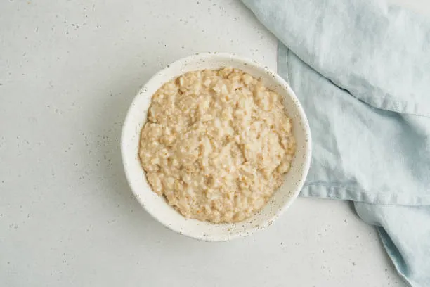

Maple and Brown Sugar Oatmeal

Description
Oatmeal is a common and beloved staple in many American homes, consisting of simple ingredients and easy to prepare, its simple yet delicious taste is unmistakable.
Ingredients
- 1 1/2 cups water
- 3/4 cup oats
- 1 tbsp brown sugar
- 1 tbsp maple syrup
Steps
- Boil water in small pot, add oats and stir for one minute.
- Remove from heat and add brown sugar and maple syrup. Continue stirring for 2-3 minutes.
Home